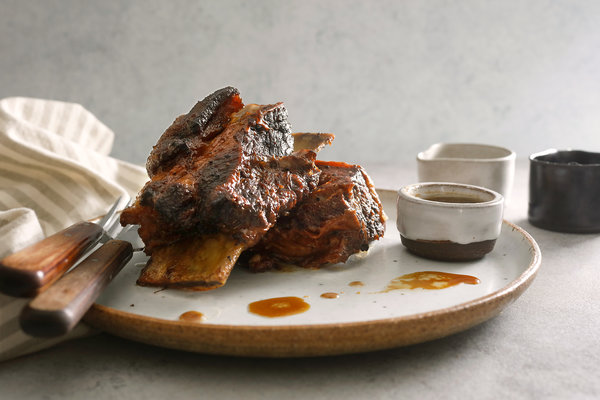
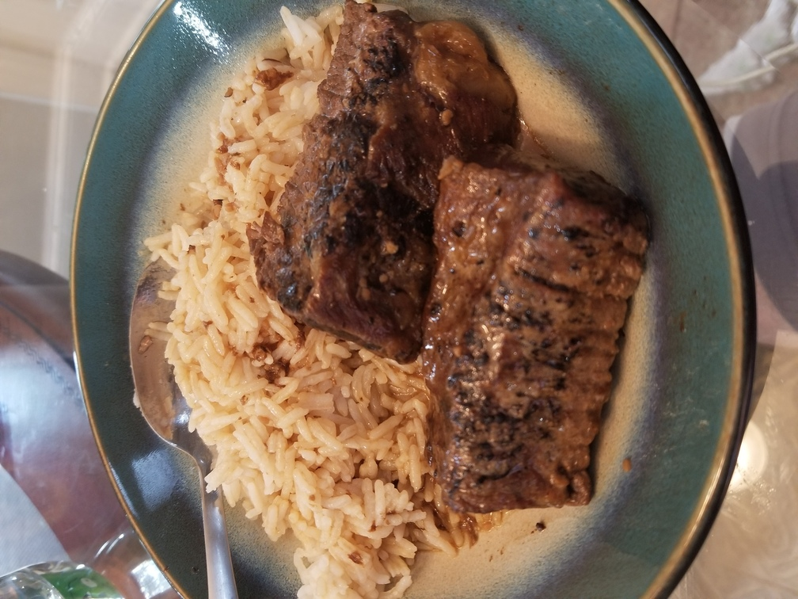

Beef Short Rib Adobo
Originally from: NYTimes

Ingredients
- 3 pounds short ribs
- 1/2 teaspoon kosher salt
- Black pepper
- 3 tablespoons oil
- 1 cup chicken stock
- 1 cup coconut milk
- 1 cup cider vinegar
- 1/2 cup soy sauce
- 1 head garlic, cloves separated and peeled
- 3 bay leaves
Directions
- Heat oil in dutch oven over medium heat, brown ribs on all sides. Remove ribs, and any excess oil.
- Add remaining ingredients and stir. Once warm, add ribs back in. Bring to boil, then cover and place in 275° oven.
- Meat will braise for 1 1/2 to 2 hours, until tender and falling off bone.
- (Optional) Cook liquid on stovetop to thicken, and place ribs under broiler to further brown.
Notes
-
2020-09-14 Made with a bad cut of short ribs, about 1.5 lbs of meat. Used about 2/3 of the remaining ingredient amounts. Meat wasn't great, but sauce worked well. Used a little more soy sauce than original recipe.
-
2020-9-15 Tried with boneless short ribs and turned out better. Meat was tender still, and sauce still was good.
